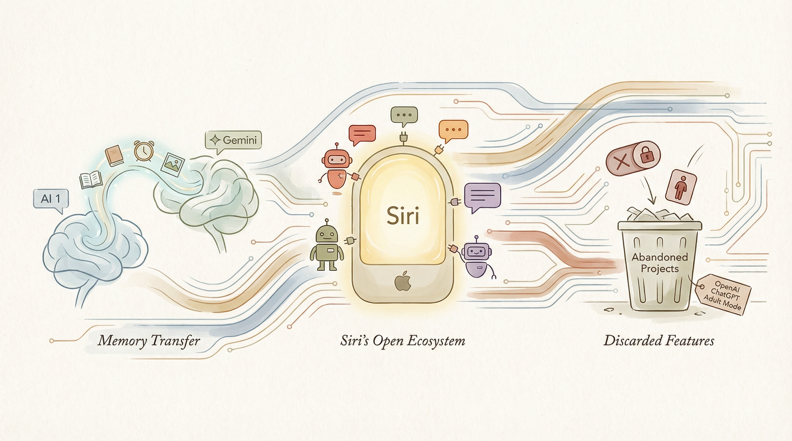

Google Gemini推出新功能，可导入其他AI的记忆和聊天历史。
两克伴AIGC日报
2026-03-27 星期五

本期关注：谷歌Gemini支持导入其他AI记忆，苹果Siri将接入第三方AI聊天机器人，OpenAI放弃ChatGPT成人模式，维基百科加强AI文章管控；同时Kensho用LangGraph构建多智能体框架解决金融数据检索，36氪上线ClawHub Skill扩展AI助手精准能力。
📰 行业动态
苹果iOS 27更新将允许用户将第三方AI聊天机器人与Siri连接。
OpenAI放弃ChatGPT的成人模式，继续削减边缘项目。
维基百科加强对AI生成文章的管控。
🔥 今日焦点
Kensho，S&P Global的AI创新引擎，成功构建了一个多智能体框架，名为LangGraph，以解决企业规模下金融数据检索的碎片化问题。该框架的核心是Grounding框架，它通过LangGraph这一统一智能体访问层，实现了对金融数据的精准检索。这一创新不仅对Kensho自身的发展具有重要意义，也对整个AI领域产生了深远影响。
LangGraph的多智能体框架能够有效整合企业内部和外部的金融数据，实现数据的统一管理和高效检索。这种跨领域、跨平台的数据整合能力，对于金融行业而言至关重要。在金融领域，数据是决策的基础，而数据检索的效率和准确性直接关系到企业的竞争力。
36氪官方Skill正式上线ClawHub，为OpenClaw用户带来三款专属Skill，助力用户轻松抢占新经济信息先机。OpenClaw的Skill生态可无限扩展，为AI助手装上专属外挂，提升其精准、高效的专项能力。ClawHub作为OpenClaw官方技能商店，汇聚海量优质Skill，是用户获取安全、可信扩展能力的核心阵地。36氪官方Skill依托专业内容生态与数据资源，精准匹配新经济参与者信息需求，让用户便捷获取高价值内容。
此次推出的三款Skill各有侧重，覆盖热点追踪、创业曝光、AI测评三大核心场景。其中，24小时热榜数据Skill可实时获取行业热点、资本动向与趋势预测，帮助用户把握行业机遇；自助报道文章直达Skill则链接创业与资本，助力创业者获取投资、拓展资源；AI测评Skill则满足用户对AI领域的专业需求。
2026年3月，腾讯微信在首页推出插件Clawbot，成为各类“龙虾”产品的接入通道入口，标志着AI首次进入微信首页。尽管Clawbot目前存在技术不足，但其背后反映了微信在AI时代对应用入口控制权的焦虑。随着AI浪潮的兴起，各大互联网公司担心AI Agent将取代传统应用，成为用户与产品之间的主要交互方式。微信通过构建通道入口，确保在AI时代不被绕开，抢占入口，嵌入用户日常使用场景。此举对AI领域具有重要意义，预示着AI应用将更加融入人们的生活和工作，同时也对传统应用提出了新的挑战。
📚 深度长文
本文深入探讨了量化在大型语言模型中的应用原理。作者Sam Rose以其独特的视角，详细解析了量化技术如何优化模型性能，降低计算成本。文章的核心观点在于，量化并非简单的数值压缩，而是对模型进行精细调整的过程。作者通过生动的实例和可视化工具，展示了浮点数在二进制表示中的细节，为读者提供了前所未有的理解。
文章的关键论据包括：量化可以显著提高模型在移动设备上的运行效率，降低能耗；量化过程中，需要考虑精度损失和模型性能下降的问题，作者提出了相应的解决方案。此外，文章还探讨了量化技术在不同场景下的应用，如语音识别、图像处理等。
本文深入探讨了如何构建用于评估深度智能代理（Deep Agents）的评估方法。作者LangChain Accounts强调，最佳的代理评估应直接衡量我们关心的代理行为。文章详细阐述了数据来源、指标创建以及如何通过长期、有针对性的实验来提升代理的准确性和可靠性。文章的核心观点在于，评估方法对塑造代理行为至关重要。作者通过独特的视角，揭示了构建高效评估体系的关键要素，为AI从业者提供了宝贵的参考和启示。阅读本文，读者将深入了解深度智能代理评估的深度和独特见解，对提升自身在AI领域的专业能力具有重要意义。
🛠️ 产品推荐
Show HN: Threat hunting command system for agentic IDEs是一款专为IDE（集成开发环境）设计的威胁狩猎命令系统。该系统通过集成先进的AI技术，实现对代码和系统行为的智能监控和分析，帮助开发者快速识别潜在的安全威胁。产品核心功能包括实时监控、智能分析、自动化响应等，有效提升开发过程中的安全防护能力。对于技术从业者而言，Show HN: Threat hunting command system for agentic IDEs能够有效解决开发过程中面临的安全风险，提高工作效率，保障项目安全。
---
Show HN：一款引入AI智能代理的看板工具，将AI作为一等团队成员。该产品通过AI代理实现任务自动分配、进度跟踪和风险评估，极大提升团队协作效率。对于技术从业者而言，这款产品能够有效解决传统看板工具在处理复杂任务时的效率低下问题，实现智能化、自动化管理，助力团队高效协同。AI智能代理的创新应用，为项目管理带来全新体验。
---
Show HN: Datetime-bench是一款专注于评估大型语言模型（LLM）在处理日期时间格式方面的准确性的工具。该产品通过对比多种日期时间格式，揭示了LLM在解析和输出时间戳时的优缺点。产品建议使用RFC 3339和Python日期格式，避免使用Unix epoch和JavaScript日期格式。针对小型模型和非推理模型，Datetime-bench指出其在时间解析和格式化方面存在较多错误。该工具为技术从业者提供了评估LLM时间处理能力的参考，有助于优化模型性能，提升用户体验。